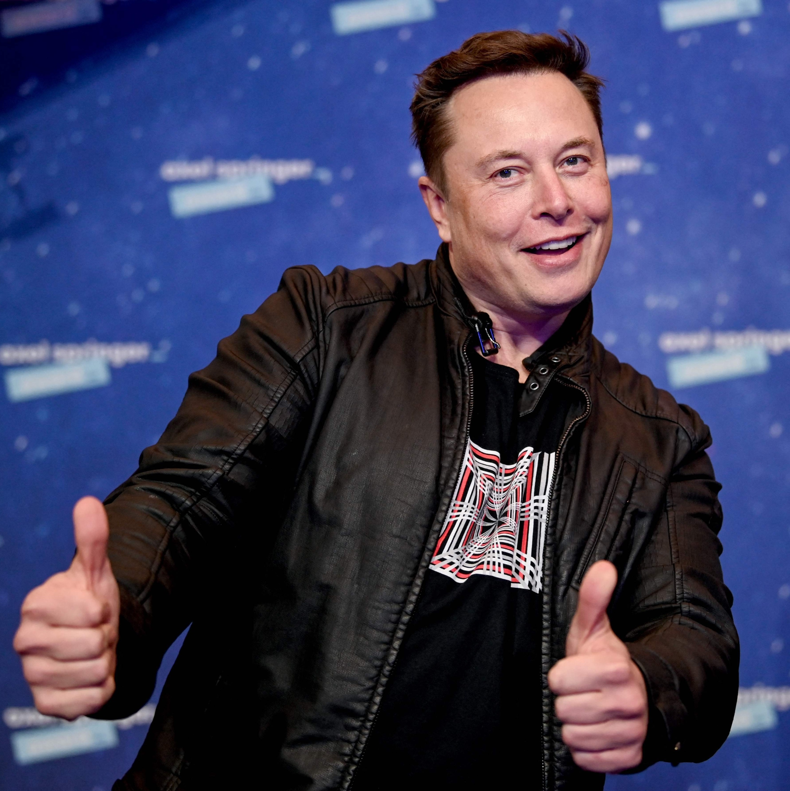

Elon Musk é a pessoa mais rica do mundo atualmente, com patrimônio estimado em US$ 219 bilhões.Em reais, a fortuna de Elon Musk é de R$ 1,021 trilhão, considerando o que ele obteve, até 05/2022.
Elon Musk é fundador e diretor executivo da SpaceX, que tem como objetivo de reduzir os custos de transporte espacial para permitir a colonização de Marte.
Fonte
https://pt.wikipedia.org/wiki/Elon_Musk
3-Pensamentos sobre o futuro
Elon Musk demonstra publicamente sua preocupação com a extinção humana, propondo soluções que buscam melhorar, na prática, o cuidado com o meio ambiente.

Musk nasceu e cresceu em Pretoria, capital administrativa da África do Sul. Ele só se mudou para as Américas em 1988, aos 17 anos, inicialmente para o Canadá para estudar na Queen’s University,Musk se tornou um cidadão dos EUA em 2002, mas também mantém a cidadania Sul-Africana (por nascimento) e Canadense (desde 1989).
Nas horas vagas (que, com tantas empresas, devem ser poucas) ele gosta de compor músicas. Sua primeira faixa foi o rap “RIP Harambe”, lançada em março de 2019 sob o selo “Emo G Records”,o nome é uma referência ao gorila Harambe, que foi morto por um tratador após arrastar uma criança de três anos para dentro de seu cercado no zoológico de Cincinnati, nos EUA, em 2016.